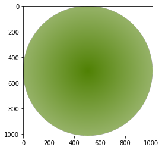

빈도 분석 (한글)
Table of contents
사용할 text 수집
import requests
from bs4 import BeautifulSoup
url = 'https://news.joins.com/article/23904235'
r = requests.get(url)
soup = BeautifulSoup(r.text, 'lxml')
title = soup.select_one('#article_title').text.strip()
content = soup.select_one('#article_body').text.strip()
print(title, '\n')
print(content)
[강찬수의 에코사이언스] 해양 플라스틱 쓰레기에 붙은 엄청난 세균이 건강 위협한다
강찬수 환경전문기자 택배 노동자들이 잇따라 숨지고 있다. 전국 택배연대 노조 등에 따르면 이달에만 CJ대한통운 서울 강북지점, 한진택배 서울 동대문지사, 경북 칠곡 쿠팡 물류센터에서 일했던 노동자가 연달아 숨졌다. 배달 물량 급증으로 인한 과로사라는 지적이 쏟아진다. 실제로 국토교통부가 국회에 제출한 자료에 따르면, 2020년 6월 생활물류 택배 물동량은 2억 9340만 개로 지난해 6월보다 36.3% 늘었다. (생략)
전처리 (Preprocessing)
*전처리 과정 (한글): (영어와 비교)
- Text Cleaning
- case conversion은 필요 없다
- Tokenization + Lemmatization + POS tagging
- 한글의 경우, KoNLPy의 형태소 분석기를 통해 3가지 작업을 한번에 수행 (.pos() 함수 이용)
- 원하는 품사의 단어들만 선택
- Stopwords Removal
Text Cleaning
# 불필요한 기호 없애기 - 정규식 사용
import re
cleaned_content = re.sub('[^,.?!\w\s]','', content) ## ,.?!와 문자+숫자+_(\w)와 공백(\s)만 남김
# 추가로 .replace를 활용해 불필요한 단어/기호를 없애준다
cleaned_content = cleaned_content.replace('\xa0', '').replace('강찬수', '').replace('연합뉴스', '').replace('환경전문기자', '')
cleaned_content
택배 노동자들이 잇따라 숨지고 있다. 전국 택배연대 노조 등에 따르면 이달에만 CJ대한통운 서울 강북지점, 한진택배 서울 동대문지사, 경북 칠곡 쿠팡 물류센터에서 일했던 노동자가 연달아 숨졌다. 배달 물량 급증으로 인한 과로사라는 지적이 쏟아진다. 실제로 국토교통부가 국회에 제출한 자료에 따르면, 2020년 6월 생활물류 택배 물동량은 2억 9340만 개로 지난해 6월보다 36.3 늘었다. 신종 코로나바이러스 감염증코로나19 탓에 시민들이 외출과 매장 쇼핑을 꺼린 탓이다. 1회용 마스크 재질이 플라스틱먼지 치솟으면 음식 배달도 늘어낙동강 물고기에도 미세플라스틱다회용기 사용 등 대안모델 필요 배달음식 주문도 늘었다. (생략)
Tokenization + Lemmatization + POS tagging
*‘KoNLPy’의 ‘Kkma’ Class 활용
- KoNLPy: 한국어 NLP를 위한 Python 패키지.
- Kkma: KoNLPy에서 제공하는 한글 형태소분석기 중 하나.
- 다른 Class와의 비교: https://konlpy.org/ko/v0.5.2/morph/
from konlpy.tag import Kkma # import해서 사용
kkma = Kkma()
NN_words = []
kkma_pos = kkma.pos(cleaned_content) ## 하나의 string을 input으로 받는다
for word, pos in kkma_pos:
if 'NN' in pos: ## 명사만 골라냄
NN_words.append(word)
print(NN_words)
['택배', '노동자', '전국', '택배', '연대', '노조', '등', '이달', '통운', '서울', '강북', '지점', '한진', '택배', '서울', '동대문', '지사', '경북', '곡', '물류', '센터', '노동자', '배달', '물량', '급증', '과로', '사', '지적', '국토', '교통부', '국회', '제출', (생략)]
Stopwords 제거
# 직접 만든 불용어 사전 활용
customized_stopwords = ['것', '등', '탓', '바', '용', '년', '개', '당', '면', '말']
unique_NN_words = set(NN_words)
for word in unique_NN_words:
if word in customized_stopwords:
while word in NN_words: NN_words.remove(word)
빈도 분석
Counter
from collections import Counter
c = Counter(NN_words) ## 단어 개수를 세어준다
print(c)
Counter({'플라스틱': 28, '미세': 13, '쓰레기': 12, '배달': 8, '연구': 8, '음식': 7, '톤': 7, '택배': 6, '팀': 6, '코로나': 5, '생산': 5, '발표': 5, '논문': 5, '노동자': 4, '마스크': 4, '먼지': 4, '물고기': 4, '최근': 4, '중': 4, '바다': 4, '지난해': 3, '국내': 3, '상황': 3, '환경': 3, (생략)})
→ 가장 많이 나온 단어 10개 추출
print(c.most_common(10))
[('플라스틱', 28), ('미세', 13), ('쓰레기', 12), ('배달', 8), ('연구', 8), ('음식', 7), ('톤', 7), ('택배', 6), ('팀', 6), ('코로나', 5)]
WordCloud
- 한글로 워드클라우드를 그릴 때는 font path를 지정해줘야 한다.
from wordcloud import WordCloud
import matplotlib.pyplot as plt
total_words = ''
for word in NN_words:
total_words = total_words+' '+word
wordcloud = WordCloud(font_path='c:/Windows/Fonts/malgun.ttf', # 한글을 출력하려면 font_path를 지정해줘야 한다
max_words=200,
relative_scaling = 0.5,
background_color='white',
colormap='summer').generate(total_words)
plt.imshow(wordcloud)
plt.axis('off')
plt.show()
+) 원하는 이미지로 워드클라우드 만들기
- mask로 사용할 이미지 불러오기
from PIL import Image import matplotlib.pyplot as plt import numpy as np icon = Image.open('green.png') # mask로 사용할 이미지 불러오기 plt.imshow(icon) mask = Image.new("RGB", icon.size, (255,255,255)) mask.paste(icon,icon) mask = np.array(mask)
-
mask=mask옵션 추가해서 워드클라우드 그리기from wordcloud import WordCloud, ImageColorGenerator import matplotlib.pyplot as plt total_words = '' for word in NN_words: total_words = total_words+' '+word wordcloud = WordCloud(font_path='c:/Windows/Fonts/malgun.ttf', max_words=200, background_color='white', mask=mask).generate(total_words) plt.figure(figsize=(7,7)) #액자사이즈설정 plt.axis('off') #테두리 선 없애기 ## mask의 색으로 단어들의 색을 칠해줌 - 이 부분을 생략하면 마스크 모양대로 워드클라우드를 만들어주되, 색은 기본색으로 나온다. image_colors = ImageColorGenerator(mask) plt.imshow(wordcloud.recolor(color_func=image_colors),interpolation="bilinear")